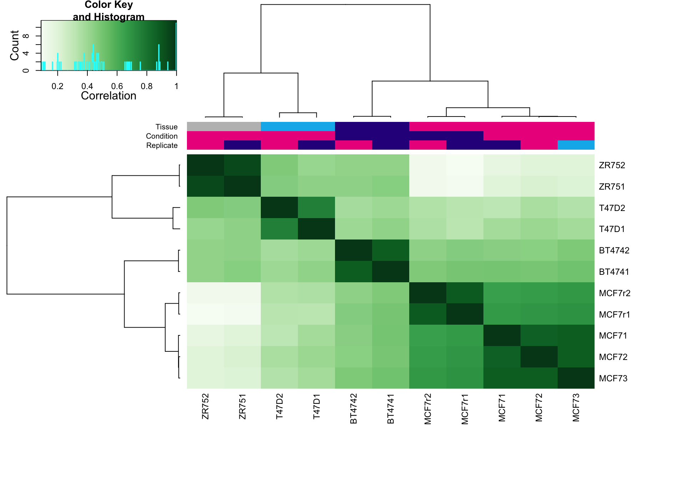
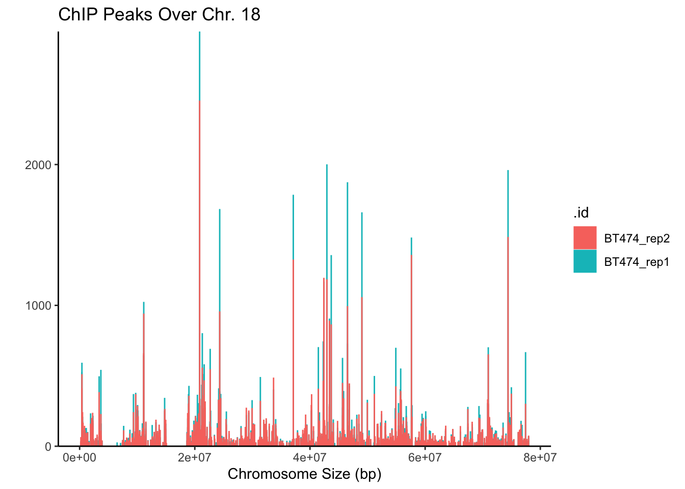

Introduction
Objective
The data for ChIP-seq peak calling are stacks of aligned reads across a genome. Some of these stacks correspond to the signal of interest (e.g. binding of a transcription factor or modified histone). Many other stacks are regarded as molecular or experimental noise, or as being influenced by a systematically greater accessibility of measurement by the experiment at that particular genomic location. The goal of this experiment is to understand how our transcription factors compare to one another in regards to binding sites.
About the Data.1
Tamoxifen is a nonsteroidal antiestrogen that has found successful applications for each stage of breast cancer in the treatment of selected patients. Tamoxifen was originally introduced for the treatment of advanced disease in postmenopausal women; however, the drug is now also available for the palliative treatment of premenopausal women with estrogen receptor (ER) positive disease. The proven efficacy of tamoxifen and the low incidence of side effects made the drug an ideal agent to test as an adjuvant therapy for women with node-positive breast cancer. doi: 10.1016/0147-0272(92)90002-6. PMID: 1582240.
About the Data.2
Source: https://content.cruk.cam.ac.uk/bioinformatics/software/DiffBind/
Samples.1
| SampleID | Tissue | Factor | Condition | Treatment | Replicate | bamReads | ControlID | bamControl | Peaks | PeakCaller |
|---|---|---|---|---|---|---|---|---|---|---|
| BT4741 | BT474 | ER | Resistant | Full-Media | 1 | reads/Chr18_BT474_ER_1.bam | BT474c | reads/Chr18_BT474_input.bam | peaks/BT474_ER_1.bed.gz | bed |
| BT4742 | BT474 | ER | Resistant | Full-Media | 2 | reads/Chr18_BT474_ER_2.bam | BT474c | reads/Chr18_BT474_input.bam | peaks/BT474_ER_2.bed.gz | bed |
| MCF71 | MCF7 | ER | Responsive | Full-Media | 1 | reads/Chr18_MCF7_ER_1.bam | MCF7c | reads/Chr18_MCF7_input.bam | peaks/MCF7_ER_1.bed.gz | bed |
| MCF72 | MCF7 | ER | Responsive | Full-Media | 2 | reads/Chr18_MCF7_ER_2.bam | MCF7c | reads/Chr18_MCF7_input.bam | peaks/MCF7_ER_2.bed.gz | bed |
| MCF73 | MCF7 | ER | Responsive | Full-Media | 3 | reads/Chr18_MCF7_ER_3.bam | MCF7c | reads/Chr18_MCF7_input.bam | peaks/MCF7_ER_3.bed.gz | bed |
| T47D1 | T47D | ER | Responsive | Full-Media | 1 | reads/Chr18_T47D_ER_1.bam | T47Dc | reads/Chr18_T47D_input.bam | peaks/T47D_ER_1.bed.gz | bed |
| T47D2 | T47D | ER | Responsive | Full-Media | 2 | reads/Chr18_T47D_ER_2.bam | T47Dc | reads/Chr18_T47D_input.bam | peaks/T47D_ER_2.bed.gz | bed |
| MCF7r1 | MCF7 | ER | Resistant | Full-Media | 1 | reads/Chr18_TAMR_ER_1.bam | TAMRc | reads/Chr18_TAMR_input.bam | peaks/TAMR_ER_1.bed.gz | bed |
| MCF7r2 | MCF7 | ER | Resistant | Full-Media | 2 | reads/Chr18_TAMR_ER_2.bam | TAMRc | reads/Chr18_TAMR_input.bam | peaks/TAMR_ER_2.bed.gz | bed |
| ZR751 | ZR75 | ER | Responsive | Full-Media | 1 | reads/Chr18_ZR75_ER_1.bam | ZR75c | reads/Chr18_ZR75_input.bam | peaks/ZR75_ER_1.bed.gz | bed |
| ZR752 | ZR75 | ER | Responsive | Full-Media | 2 | reads/Chr18_ZR75_ER_2.bam | ZR75c | reads/Chr18_ZR75_input.bam | peaks/ZR75_ER_2.bed.gz | bed |
Samples.2
Pre-Analysis
bowtie2 -p 20 -x mm9_genome -U file1.fastq -S file1.sam
samtools view -bS file1.sam > file1.bam
samtools sort file1.bam file1_sorted
samtools index file1_sorted.bamConverting BAM to BED (need this for Differential Binding Analysis)
bamToBed -i file_sorted.bamUsing the mapped info from BAM file, we will perform peak calling using the MACS 2.0 program.If necessary
macs2 callpeak -t file1.bam -f BAM -g mm -n file1_label -p 1e-3 --to-largemacs14 -t file1.bam -f BAM -g h -n file1_label
Differential Binding Analysis
Differential binding affinity analysis: The core functionality of DiffBind is the differential binding affinity analysis, which enables binding sites to be identified that are significantly differentially bound between sample groups
Multidimensional scaling (MDS) is a popular approach for graphically representing relationships between objects (e.g. plots or samples) in multidimensional space. Dimension reduction via MDS is achieved by taking the original set of samples and calculating a dissimilarity (distance) measure for each pairwise comparison of samples. The samples are then usually represented graphically in two dimensions such that the distance between points on the plot approximates their multivariate dissimilarity as closely as possible.
I recommend to color by “tissue” and shape by “condition”
MA plots are a useful way to visualize the relationship between the overall binding level at each site and the magnitude of the change in binding enrichment between conditions, as well as the effect of normalization on data. An MA plot can be obtained for the Resistant vs Responsive contrast as follows:
The plot is shown in Figure 7. Each point represents a binding site, with the 246 points in magenta representing sites identified as differentially bound. There is a blue horizontal line through the origin (0 LFC), as well as a horizontal red curve representing a non-linear loess fit showing the underlying relationship between coverage levels and fold changes. The plot shows how the differentially bound sites appear to have a minimum absolute log fold difference of somewhere between one and two. As we have already seen, it also shows that more ERa binding sites lose binding affinity in the tamoxifen resistant condition than gain binding affinity, as evidenced by more red dots below the center line than are above it. This same data can also be shown with the concentrations of each sample groups plotted against each other plot using dba.plotMA(tamoxifen, bXY=TRUE). Section 7 contains several examples of MA plots, including showing non-normalized data, and the ability to plot any subset of samples against any other set of sample.
MA Plot i

MA Plot ii
Volcano plots also highlight significantly differentially bound sites and show their fold changes. Here, however, the confidence statistic (FDR or p-value) is shown on a negative log scale, helping visualize the relationship between the magnitude of fold changes and the confidence that sites are differentially bound.
The plot shown, with the predominance of lower binding in the Resistant case evidenced by the greater number of significant sites on the negative side of the Fold Change (X) axis.
Volcano Plot i
Volcano Plot ii

Correlation heatmap:The effect of different scoring methods (normalization) can be examined in these plots by setting the score parameter to a different value. The default value, DBA_SCORE_NORMALIZED, uses the normalized read counts (see Section 7). Another scoring method is to use RPKM fold (RPKM of the ChIP reads divided by RPKM of the control reads).
Cell-Line Heatmap
The resulting plot (Figure 1) shows that while the replicates for each cell line cluster to- gether appropriately, the cell lines do not cluster into groups corresponding to those that are responsive (MCF7, T47D, and ZR75) vs. those resistant (BT474 and MCF7r) to ta- moxifen treatment. It also shows that the two most highly correlated cell lines are the two MCF7-based ones, even though they respond differently to tamoxifen treatment.
Binding Site Heatmape
Another way to view the patterns of binding affinity directly in the differentially bound sites is via a binding affinity heatmap, showing the read scores for some or all of the binding sites. This can be plotted for the example case as follows:
 Figure 10 shows the affinities and clustering of the differentially bound sites (rows), as well as the sample clustering (columns). In this case, the (normalized) counts have been row scaled, and a red/green heatmap color palette applied.
Figure 10 shows the affinities and clustering of the differentially bound sites (rows), as well as the sample clustering (columns). In this case, the (normalized) counts have been row scaled, and a red/green heatmap color palette applied.
ChIPSeeker
The bias towards enriched binding in the Responsive case (or loss of binding affinity in the Resistant case) can be visualized using MA and Volcano plots, as shown in the following Section.
Venn diagrams are also useful for examining overlaps between peaksets, particularly when determining how best to derive consensus peaksets for read counting and further analysis. Section 8, which discusses consensus peaksets, shows a number of Venn plots in context, and the help page for dba.plotVenn has a number of additional examples.
## Generating report-based DBA object...
ChIP-seq Profiling
Heatmap of ChIP peaks among different cell lines

Average profile of ChIP peaks among different cell lines

Genomics locations: dataset comparisons with barplot

Distance to TSS Comparisons

Functional Analysis In Progress …
#biomart
ensembl <- useEnsembl(biomart = "genes", dataset = "hsapiens_gene_ensembl",version = 95)
# running query: extracting ENTREZID for genes on chromosome 1 and 2
genes.chr18 <- getBM(attributes= "entrezgene", filters=c("chromosome_name"), values=18, mart=ensembl)
# reformatting output to character string (as required later on by clusterProfiler functions)
genes.universe <- as.character(as.numeric(as.matrix(genes.chr18)))# a: selecting annotated peaks for functional enrichment in object
data.peaks_ann <- peaks.MCF7_ann
#x <- as.data.frame(data.peaks_ann)
# a: fining enriched Reactome pathways using chromosome 1 and 2 genes as a background
pathway.reac1 <- enrichPathway(as.data.frame(data.peaks_ann)$geneId, universe = genes.universe)
# a: previewing enriched Reactome pathways
head(pathway.reac1)
# b: selecting peaks
data.peaks <- peaks.T47D
# b: running seq2gene function for many-to-many mapping based on sequence regions (note: no prior peaks annotations here, many-to-many mapping is done from the sequence)
genes.m2m <- seq2gene(data.peaks, tssRegion = c(-1000, 1000), flankDistance = 3000, TxDb=txdb)
# b: finding enriched Reactome pathways given many to many mapping and chromosome 1 and 2 genes as a background
pathway.reac2 <- enrichPathway(genes.m2m, universe = genes.universe)
# b: creating dotplot to visualise enrichment results
dotplot(pathway.reac2)# creating a gene list with ENTREZID ideas extracted from our annotation list, containing annotated peaks for all four cell lines
list.genes = lapply(list.annotations, function(i) as.data.frame(i)$geneId)
names(list.genes) <- sub("_", "\n", names(list.genes))
# running enrichedGO function to find enriched MF correlation_libraries_normalised on the gene list
compMF <- compareCluster(geneCluster = list.genes,
fun = "enrichGO",
pvalueCutoff = 0.05,
pAdjustMethod = "BH",
OrgDb='org.Hs.eg.db',
ont="MF")
# comparing results on a dotplot
dotplot(compMF)
# simplifying results although here we do not have problems with too many GO terms
compMF.flr <- simplify(compMF, cutoff = 0.7, by = "p.adjust", select_fun = min, measure = "Wang", semData = NULL)
# creating a dotplot on reduced GO terms
dotplot(compMF.flr)